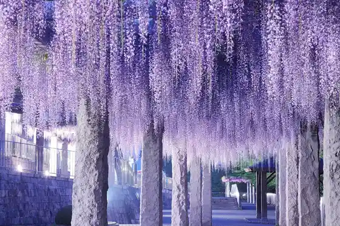
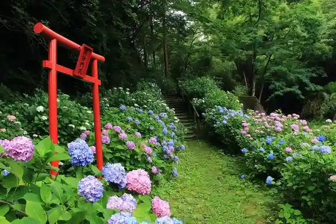
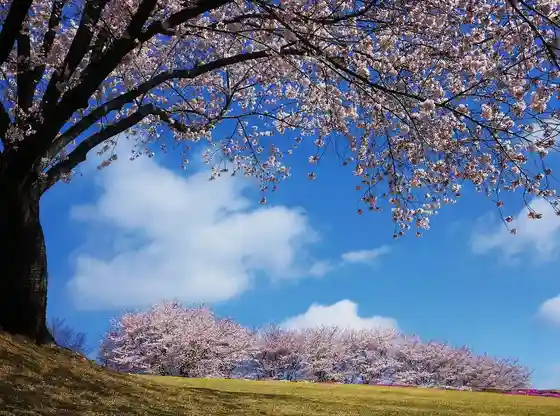
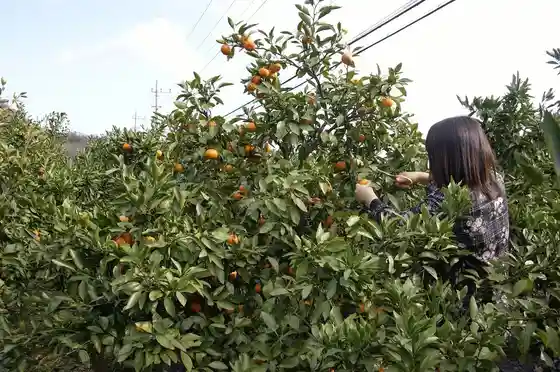

Fujioka Fuji Festival
Fujioka, Gunma · 0274-22-8111 · Official / source link

Yashio Ajisai Village
Fujioka, Gunma · 0274-52-3111 · Official / source link

Fujioka Sakura Festival (Sakurayama Park)
Fujioka, Gunma · 0274-52-3111 · Official / source link
Sakura no Raitoappu (Fuji no Saku Oka)
Fujioka, Gunma · 0274-40-2317 · Official / source link

Sakurayama Koen Mikan Sono
Fujioka, Gunma · Official / source link

Tezukuri Tosen (Matsuya Shuzo (Kabu))
Fujioka, Gunma · 0274-22-0022 · Official / source link
Gan (Takai (Kabu))
Fujioka, Gunma · 0274-24-0011 · Official / source link
Fuji no Saku Oka Park
Fujioka, Gunma · 0274-22-8111 · Official / source link
Sakurayama Forest Park
Fujioka, Gunma · Official / source link
Fujioka Tami Kikka Taikai
Fujioka, Gunma · 0274-40-2317 · Official / source link
Roadside Station Joshu Onishi
Fujioka, Gunma · 0274-52-3300 · Official / source link
Haiueioashisu Raran Fujioka (Roadside Station Raran Fujioka)
Fujioka, Gunma · 0274-24-8220 · Official / source link
Sekai Isan Kozan Sha Ato
Fujioka, Gunma · 0274-23-5997 · Official / source link
Tsuchi to Hi no Sato Park
Fujioka, Gunma · 0274-28-0385 · Official / source link
Kyujitsu no Nishi Shogakko
Fujioka, Gunma · 0274-28-0220 · Official / source link
O Shokuji Tokoro Yamabuki Sakurayama Mise
Fujioka, Gunma · 0274-52-3078 · Official / source link
Mikaho Chaya
Fujioka, Gunma · 0274-22-6379 · Official / source link
Soba Tokoro Dai Village
Fujioka, Gunma · 0274-24-3737 · Official / source link
Mugi Ban Ya Ima Jo
Fujioka, Gunma · 0274-22-0103 · Official / source link
Fujioka Sogo Sports Park
Fujioka, Gunma · 0274-23-9850 · Official / source link
Koshin Yama General Park
Fujioka, Gunma · 0274-23-9850 · Official / source link
Sakurayama Park
Fujioka, Gunma · 0274-52-3111 · Official / source link
Kai Yu Tei
Fujioka, Gunma · 0274-25-8411 · Official / source link